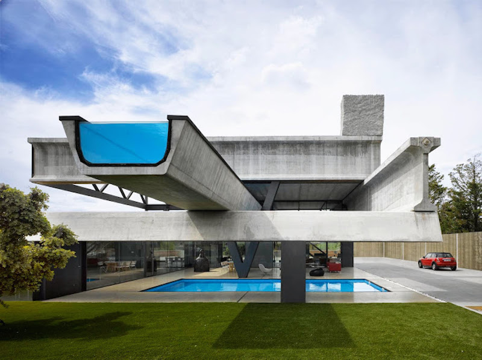

CANTILEVER DESIGN
Cantilever Design
Introduction
A cantilever is a rigid structural elements such as a beam or a plate, anchored at only one end to a support from where it is protruding. This event tests your technical skills and application of them in practical life. Come and show your skills in designing the structure using simple things like Straws.
COMPETITION RULES
- Teams may consist of upto 3 students
- Materials: U will be given enough straws to prepare the structure but with only 36 inches of masking tape.
- Tools: scissor, tape and Straws.
- You will be given 2 hours time to complete your structure.
JUDGING CRITERIA
- At the end of the allotted time judge will measure your cantilever distance, the one with longer cantilever will win.
- The structure must be free standing without touching the ground.